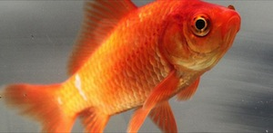

September 25, 2014
This goldfish's name is Chad. Don't wear it out. Chad is an indepedent goldfish who doesn't take handouts from anyone. He is his own goldfish, trying to strike it out on his own. Chad's done with your dictatorship of a fishbowl. No man should have all the power, or fish food for that mater. Chad is a rebel, but don't you call him a rebel without a cause because he's like super close to finding one, he just needs a little more time.